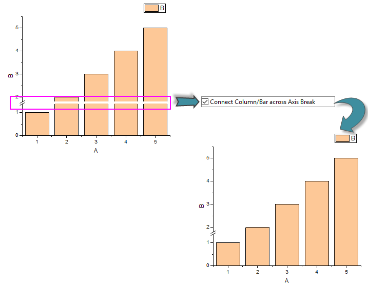
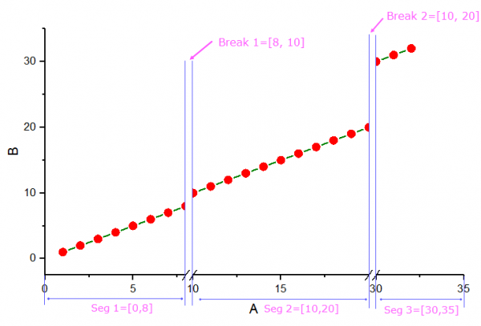

Verwenden Sie die Bedienelemente auf der Registerkarte Anzeige des Dialogs Details Zeichnung auf Seitenebene, um eine Seitenfarbe festzulegen, gezeichnete Linien über Achsenunterbrechungen und/oder fehlende Datenpunkte hinweg zu verbinden, fehlende Daten beim Berechnen der Balken-/Säulenbreite zu berechnen sowie die Funktion Master Items zu steuern.
Dieses Bedienelement, kombiniert mit der Gradientenfüllung unten, bestimmt die Seitenfarbe.
Um keine Seitenfarbe anzuzeigen:
Ist Keine ausgewählt und die Seite wird exportiert oder in die Zwischenablage kopiert, ist die Seite transparent (zeigt die Hintergrundfarbe der Zielanwendung an).
Um eine einzelne Farbe auf der Seite anzuzeigen:
Um die Hintergrundfarbe der Seite transparent zu machen:
Legen Sie die Seitenfarbe des aktuellen Diagramms als graduierte Farben fest.
Um einen Farbgradienten zu der Seite hinzuzuzeigen:
Um die Gradientenfüllfarbe transparent zu machen:
Weitere Informationen zu den Optionen der Gradientenfüllung finden Sie unter diesem Thema.
Zum Verbinden der abgeschnittenen Enden eines Linien- oder eines Punkt- + Liniendiagramms bei einer Achsenunterbrechung:
In einem Punkt-Liniendiagramm wird die Linie über dem Unterbrechungsbereich gestrichelt dargestellt.
Wenn Sie bei Säulen-/Balkendiagrammen eine Unterbrechung auf der Y-Achse hinzufügen, werden die Säulen/Balken bei dieser Unterbrechung standardmäßig unterbrochen. Sie können dieses Kontrollkästchen aktivieren, um die Säulen/Balken zu verbinden und sie ohne Unterbrechung zu zeigen.

Um den Linientrend (wirkliche Liniensteigung) vor und nach der Achsenunterbrechung beizubehalten, als gäbe es keine Achsenunterbrechung:
Im Folgenden finden Sie ein einfaches Beispiel, das demonstriert, wie diese Option funktioniert:
Wenn es eine Achsenunterbrechung gibt und Sie dieses Kontrollkästchen deaktivieren, wird die Steigung auf beiden Seiten der Unterbrechung nicht die tatsächliche Steigung zwischen den Daten wiedergeben. Hiernach folgt ein einfaches Beispiel, das zeigt, wie die Linien verbunden sind, ohne die wirkliche Steigung beizubehalten:
Ab Origin 2018 können Sie, sobald Sie das Kontrollkästchen Automatische Position für Achsenunterbrechungen auf der Registerkarte Unterbrechungen im Dialog Achsen aktiviert haben, diese Option nutzen, um jedes Segment der Achsenunterbrechung proportional zu zeigen.
Das Diagramm unten zeigt Ihnen, wie Achsenunterbrechungspositionen durch Verwendung der proportionalen Einheit automatisch gesetzt werden:

Gesamtlänge = Achsenlänge - Länge der Unterbrechung 1 - Länge der Unterbrechung 2
Sie können ebenfalls sagen:
Gesamtlänge = Länge des Segments 1 + Länge des Segments 2 + Länge des Segments 3
Seg 1, Seg 2 und Seg 3 werden dann entsprechend ihrer Längenanteile 8: 10: 5 (das heißt (8-0):(20-10):(35-30)) auf der Gesamtlänge neu skaliert.
Um Linien über fehlende Daten in Linien- und Punkt-Liniendiagrammen hinweg zu verbinden:
Um fehlende Daten zum Berechnen der Balken-/Säulenbreite in Säulen- und Balkendiagrammen zu ignorieren:
Diese Funktion ist besonders nützlich, wenn die Daten eine große Anzahl fehlender Daten enthalten und daher die Säulen/Balken extrem schmal machen. Hinweis: Diese Option ignoriert die fehlenden Werte nur beim Berechnen der Säulen-/Balkenbreite. Sie entfernt die fehlenden Werte nicht aus dem Säulen-/Balkendiagramm.
Siehe Hinweise für 3D-Balkendiagramm.
Origin stellt die Funktion "Master Item" zur Verfügung, dieses ermöglicht es Ihnen, eine Standardabfolge von Eigenschaften und Anmerkungen in eine Gruppe Diagrammfenster einzufügen. Dies ist nützlich, um einen benutzerdefinierten Hintergrund, ein Firmenlogo oder andere Beschriftungen und Bilder in allen oder nur in ausgewählten Diagrammen oder in Layoutseiten Ihres Projekts zu verwenden. Sobald Sie Ihre Master Items erstellt haben, verwenden Sie dieses Kontrollkästchen, um sie für grafischen Export, Zwischenablage und Druckausgabe anzuwenden.
Beachten Sie, dass jede Diagrammseite ihre eigenen Bedienelemente für das Master Item besitzt:
Weitere Informationen zum Erstellen und Einschließen von Master Items in Ihren Diagrammen und Layoutseiten finden Sie unter Ein Master-Seitenlayout für Diagramme erstellen.
Diese Auswahlliste enthält Bedienelemenete der numerischen Trennzeichens, das in Arbeitsblättern und Diagrammen verwendet wird.
Standardmäßig bedeutet Auto, dass die numerischen Trennzeichen den Einstellungen von Trennzeichen auf der Registerkarte Zahlenformat im Dialog Hilfsmittel: Optionen entsprechen. Es besteht eine alternative Auswahl für Anwender, die ein anderes Trennzeichen auf der Diagrammseite verwenden möchten.